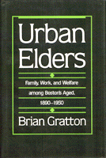

How has the post-New Deal Era affected the aged in America?
How has the post-New Deal Era affected the aged in America?


 How has the post-New Deal Era affected the aged in America?
How has the post-New Deal Era affected the aged in America?

|  |
Urban EldersFamily, Work, and Welfare Among Boston's Aged, 1890-1950Brian Grattoncloth EAN: 978-0-87722-390-0 (ISBN: 0-87722-390-4) |
How has the post-New Deal Era affected the aged in America? Urban Elders focuses upon the elderly residents in the city of Boston to illustrate a shared experience among America's elderly community: during the first half of the twentieth-century the American aged left behind the relative anonymity of a family-determined fate and became public clients of the welfare state. Until 1930 most older men enjoyed relatively good access to occupations, remained in the labor force, and retained continuity and stability in their household and family relationships. Gratton's engrossing analysis reveals that the labor force activity of older men first sharply declined after the institution of welfare benefits.
The discussion presented in Urban Elders addresses the central question that if the welfare system has tended to create the distinct circumstances of the aged, rather than to react to them, what prompted its development? Gratton asserts that the history of old age should be divided into three parts: pre-industrial, industrial, and post-New Deal. By the 1950's, as this book reveals, the common experiences had changed from work or dependence upon the family to retirement and dependence on the state. The new arrangement is precisely what troubles us as a nation; its origins, closely followed in this book, deserve our careful attention.
Brian Gratton is Assistant Professor of History at Arizona State University.
American Studies
Sociology
Urban Studies
© 2015 Temple University. All Rights Reserved. This page: http://www.temple.edu/tempress/titles/360_reg.html.